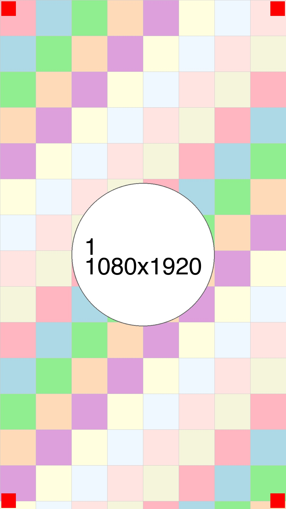

デザインの未来
テクノロジーと美学の融合

AIが生み出す新しい美学
人工知能の進歩により、デザインの世界は大きな変革期を迎えている。 従来の人間の感性に基づくデザインに加えて、機械学習による パターン認識と創造性の組み合わせが、これまでにない 新しい表現を生み出している。
しかし、技術が進歩しても、デザインの本質は変わらない。 ユーザーにとって意味のある体験を提供し、美しさと 機能性の両立を図ることが重要だ。